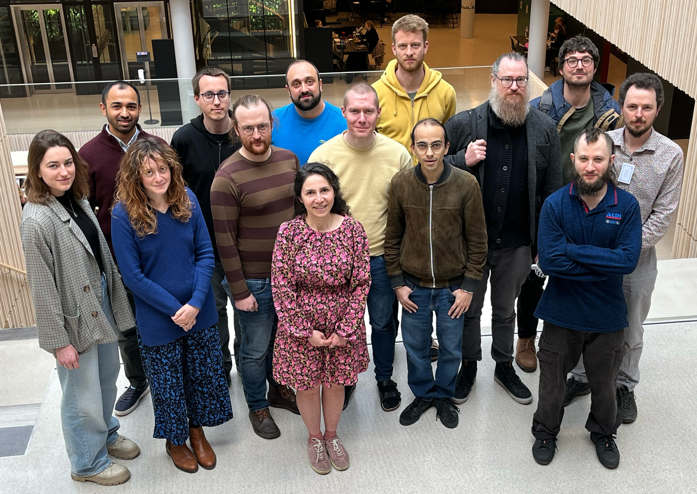

Workshop on Fixed Points and Ill-founded Proofs, 27-28 April, 2023
Held on 27-28 April, 2023 at the University of Gothenburg, this workshop brought together researchers working on various aspects of fixed point logics and ill-founded proofs. The event was sponsored by the Knut and Alice Wallenberg Foundation via the research project Taming Jörmungandr: The Logical Foundations of Circularity and the Department of Philosophy, Linguistics and Theory of Science.

Location
The workshop will take place at the Humanities faculty building of the University of Gothenburg. It is located next to the Korsvägen transport hub and within walking distance from the city centre.
Schedule
See below for talk abstracts.
Thursday, April 27th
| Time | Occasion | Location |
|---|---|---|
| 9:30 | Welcome fika | J411 |
| 10:00 | Anupam Das Using metamathematics to calibrate ill-founded reasoning | |
| 11:00 | Lide Grotenhuis Ill-founded proofs for intuitionistic linear-time temporal logic | |
| 11:40 | Dominik Wehr Ordinal annotations for cyclic first-order arithmetics | |
| 12:20 | Lunch | Cafeteria |
| 14:00 | Guillermo Menéndez Turata | J444 |
| 14:40 | Giacomo Barlucchi On closure ordinals | |
| 15:15 | Fika |
Friday, April 28th
| Time | Occasion | Location |
|---|---|---|
| 10:00 | Sebastian Enqvist Herbrand meets cyclic proofs | J442 |
| 10:40 | Johannes Kloibhofer Cut elimination in cyclic proofs for temporal logic | |
| 11:20 | Gianluca Curzi On the computational expressivity of (circular) proofs with fixed points | |
| 12:20 | Lunch | Cafeteria |
| 14:00 | Licentiate defense of Dominik Wehr (opponent: Anupam Das) Representation matters in cyclic proof theory | J439 |
| 16:00 | Reception with coffee and cake | FLoV |
| 19:00 | Workshop dinner |
Workshop dinner
On Friday evening, there will be a workshop dinner at Floating Saigon resturant on Kungsportsplatsen at the city end of Avenyn. Dinner starts at 19.00.
Abstracts
Anupam Das: Using metamathematics to calibrate ill-founded reasoning
I will discuss some recent results exploiting metamathematical methods to measure the expressivity of circular reasoning in a variety of settings. I will focus on the general structure of such arguments, and in particular emphasise the scope of the methodology.
Lide Grotenhuis: Ill-founded proofs for intuitionistic linear-time temporal logic
Ill-founded and cyclic proof calculi have shown to be particularly suitable for modal fixed point logics. The present work is motivated by the question whether such calculi can also be designed for intuitionistic versions of such logics. The main obstacle in applying the standard techniques is the two-dimensional nature of the intuitionistic semantics: Kripke models for intuitionistic modal logic consist of both an intuitionistic and a modal relation, which are required to satisfy some confluence properties.
In this work we study intuitionistic versions of linear-time temporal logic by considering the language iLTL, which extends intuitionistic propositional logic with the temporal operators ‘next’ and ‘until’. We interpret this language in models satisfying forward confluence and models satisfying both forward and backward confluence. For each of the resulting logics, we present a cut-free complete, ill-founded sequent calculus. Both calculi employ a simple form of nesting that enables formulas to be operated on at different temporal positions. This is joint work with Bahareh Afshari, Graham Leigh and Lukas Zenger.
Sebastian Enqvist: Herbrand meets cyclic proofs
Herbrand’s theorem provides a sort of computational content to classical logic. A standard way to prove it uses cut elimination in sequent calculus. In recent work by Afshari, Hetzl and Leigh, it was shown how to extract Herbrand disjunctions directly from sequent calculus proofs without eliminating cuts first. The idea is to associate a higher-order recursion scheme with a given proof, from which a set of witnessing terms can be extracted. In this talk I will present ongoing work, joint with Bahareh Afshari and Graham Leigh, in which we show how such “Herbrand schemes” can be adapted to provide a method for witness extraction from cyclic sequent calculus proofs in the setting of the classical theory of inductively defined predicates. Indeed, this is a quite natural step to take, as recursion schemes in general are cyclic structures.
Johannes Kloibhofer: Cut elimination in cyclic proofs for temporal logic
We present cut elimination for an annotated cyclic proof system for modal logic with the eventually operator. In this proof system the usual method of pushing cuts upwards does not necessarily yield a proof. We circumvent this problem by separating the critical case in the cut reductions, enabling us to directly obtain a cut-free cyclic proof without a detour via infinitary proofs. We expect that this method can be extended to more complicated logics and thereby serve as a starting point for developing cut elimination methods for cyclic proof systems.
(joint work in progress with Bahareh Afshari)
Gianluca Curzi: On the computational expressivity of (circular) proofs with fixed points
We study the computational expressivity of proof systems with fixed point operators, within the ‘proofs-as-programs’ paradigm. We start with a calculus muLJ (due to Clairambault) that extends intuitionistic logic by least and greatest positive fixed points. Based in the sequent calculus, muLJ admits an extension to a ‘circular’ calculus CmuLJ in a standard way.
Our main result is that, perhaps surprisingly, both muLJ and CmuLJ represent the same first-order functions: those provably total in Pi12-CA0, a subsystem of second-order arithmetic beyond the ‘big five’ of reverse mathematics and one of the strongest theories for which we have an ordinal analysis (due to Rathjen). This solves various questions in the literature on the computational strength of (circular) proof systems with fixed points.
For the lower bound we give a realisability interpretation from an extension of Peano Arithmetic by fixed points that has been shown to be arithmetically equivalent to Pi12-CA0 (due to Möllerfeld). For the upper bound we give a novel totality argument for circular proofs with fixed points. In fact we must formalise this argument itself within Pi12-CA0 in order to obtain the tight bounds we are after, requiring a choice of higher computability model distinct from usual type structures for second-order systems (such as Girard-Reynolds’ F). Along the way we develop some novel reverse mathematics for the Knaster-Tarski fixed point theorem.